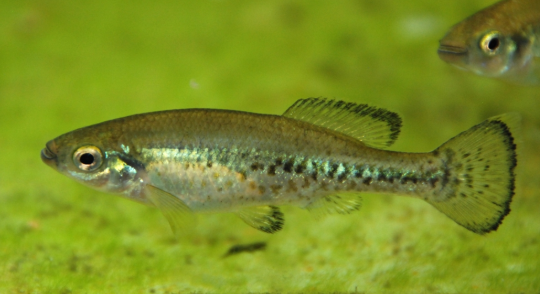

Systématique
- Ordre : Cyprinodontiformes
- Famille : Goodeidae
- Genre : Ilyodon
- Espèce : I. whitei
- Auteur : Meek, 1904

Ilyodon whitei est un Goodeidé robuste originaire du bassin du Rio Balsas au Mexique. Il présente un corps haut et comprimé latéralement, avec un profil dorsal nettement convexe. Sa coloration est généralement gris-olivâtre sur le dos, s'éclaircissant vers le ventre argenté. Les flancs sont marqués par une bande latérale sombre irrégulière et des points noirs qui tendent à s'estomper chez les vieux spécimens.
Les femelles peuvent atteindre une taille respectable de 8 à 10 cm, tandis que les mâles sont plus petits, mesurant entre 6 et 8 cm. Cette espèce est étroitement liée à Ilyodon furcidens, mais s'en distingue par sa distribution géographique plus méridionale et certains caractères méristiques.
Comme les autres membres de son genre, Ilyodon whitei est un poisson très actif et excellent nageur. Son comportement est grégaire ; il est conseillé de le maintenir en groupe de 6 à 8 individus minimum pour observer ses interactions sociales naturelles. Les mâles dominants peuvent se montrer territoriaux et paradent fréquemment pour affirmer leur rang.
C'est un poisson de pleine eau qui apprécie les espaces dégagés pour la nage rapide, mais il nécessite également des zones avec un décor rocheux pour se sentir en sécurité. Bien que robuste, il peut se montrer brusque avec des espèces timides, il est donc préférable de privilégier une colocation avec d'autres Goodeidae ou des Characidés robustes.
Mode : Vivipare matrotrophe.
La biologie reproductive est celle des Goodeinae. La gestation dure entre 55 et 65 jours. Les embryons sont nourris via des trophotaeniae. Les portées sont généreuses, allant de 15 à 40 alevins selon la maturité de la femelle.
Les jeunes sont expulsés à une taille d'environ 15 mm. Ils sont très précoces et cherchent immédiatement à se nourrir. Pour assurer une survie maximale du frai, un aquarium riche en algues et en micro-faune, ainsi que la présence de cachettes denses (mousses, racines), est indispensable car les adultes peuvent accidentellement s'attaquer aux jeunes.
Dimorphisme sexuel : Le mâle possède un andropode (modification des premiers rayons de la nageoire anale). Il est plus petit et présente souvent des nageoires dorsale et caudale plus colorées, avec des bordures sombres ou jaunâtres plus nettes. La femelle est plus massive, surtout en période de gestation.
Espérance de vie : 4 à 6 ans en aquarium dans de bonnes conditions de maintenance.
Ilyodon whitei peuple le haut bassin du Rio Balsas, incluant les États de Morelos, Michoacán et Guerrero. On le trouve principalement dans les rivières et ruisseaux de montagne à courant modéré, souvent sur des fonds de gravier et de galets recouverts de périphyton.
L'eau de son habitat est alcaline et moyennement dure. Contrairement aux espèces de lacs stagnants, il a besoin d'une eau très oxygénée. Il supporte des températures fluctuantes mais préfère une gamme entre 20 et 24 °C. Son milieu est menacé par le détournement des eaux pour l'irrigation et la pollution domestique.
Répartition

Origine naturelle :
- Mexique : Bassin supérieur du Rio Balsas (États de Morelos, Guerrero et Michoacán).
- Localité type : Rio Yautepec, Yautepec, Morelos, Mexique.
Statut UICN : Non évalué officiellement à l'échelle mondiale, mais considéré comme localement menacé par la fragmentation de son habitat et l'assèchement des cours d'eau.
Paramètres de maintenance
Température : 18 à 24 °C. Éviter les chaleurs prolongées au-delà de 26 °C.
pH : 7,0 à 8,2.
GH : 10 à 20 °dGH.
Courant : Modéré; une bonne aération par venturi ou rejet de filtre est recommandée.
Volume conseillé : Minimum 120 L pour maintenir un groupe de manière pérenne.
Régime alimentaire
Régime : Omnivore à tendance alguivore.
Il se nourrit naturellement d'algues et de petits invertébrés associés. En aquarium, il accepte les nourritures sèches mais doit impérativement recevoir une base végétale (spiruline, épinards). Les distributions de nourriture vivante ou congelée (artémias, daphnies) favorisent la croissance et la reproduction.